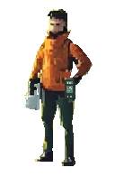
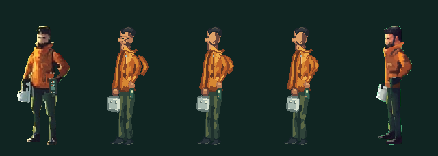

阶段二 / 停步转身
正面 → 侧面，五张完整人物帧。
这页只审查三张手绘过渡帧是否保持同一个人：头颈、胸廓、骨盆、双脚、工具箱和记录器必须同时连续。它们还没有接入首页，也不代表动作已经通过。
当前状态：技术与美术复核中。 原生尺寸和 3× 放大都要通过；若中间帧的笔触或结构不成立，就回到源层修正，不扩展到行走循环。
3× 逐帧预览

播放只用于观察连续性，默认不自动播放；系统开启“减少动态”时保持静止。
原生尺寸接触表

阶段二 / 停步转身
这页只审查三张手绘过渡帧是否保持同一个人：头颈、胸廓、骨盆、双脚、工具箱和记录器必须同时连续。它们还没有接入首页，也不代表动作已经通过。
当前状态：技术与美术复核中。 原生尺寸和 3× 放大都要通过；若中间帧的笔触或结构不成立，就回到源层修正，不扩展到行走循环。

播放只用于观察连续性，默认不自动播放；系统开启“减少动态”时保持静止。
